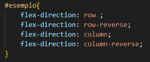
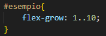

2


Tornando alle proprietà del flex, qui ne abbiamo una fondamentale che ci servirà a determinare la direzione degli elementi.
Esempio:
La proprietà che permette tutto questo è la proprietà "flex-direction". Questa permette di dare una direzione agli elementi presenti nel tag. Possiamo dare 4 parametri a questa proprietà, che sono:
row: ordinerà gli elemneti da sinistra a destra
row-reverse: ordinerà gli elementi da destra a sinistra
column: ordinerà gli elementi da sopra a sotto
column-reverse: ordinerà gli elementi da sotto a sopra
Esempio del codice:
Per continuare adesso andremo a vedere una proprietà molto utile a gestire gli spazi degli elementi, ovvero la "Flex-Grow".
La flex-grow permette di allargare gli elementi in base alle necessità.
Come la proprietà order utilizziamo un indice per indicare quale sarà l'elemento che dovrà prendere più spazio nel contenitore
Esempio:
In questo caso abbiamo impostato:
pulsante 1: indice 1
pulsante 2: indice 2
pulsante 3: indice 1
pulsante 4: indice 3
Quindi il pulsante 4, che ha un indice più alto, occupa più spazio fra tutti gli elementi. Il pulsante 2 che ha un indice minore rispetto al pulsante 4, sarà più piccolo rispetto ad esso. E infine e i pulsanti 1 e 3, che hanno l'indice minore, saranno gli elementi che occuperanno meno spazio fra tutti gli elementi.
Esempio del codice:
In conclusione, possiamo parlare pure della proprietà Flex-Shrink, non molto complicata, dato il semplice fatto che sia il contrario della proprietà appena descritta. La flex-shrink permette di rimpicciolire l'elemento tramite indice.
2